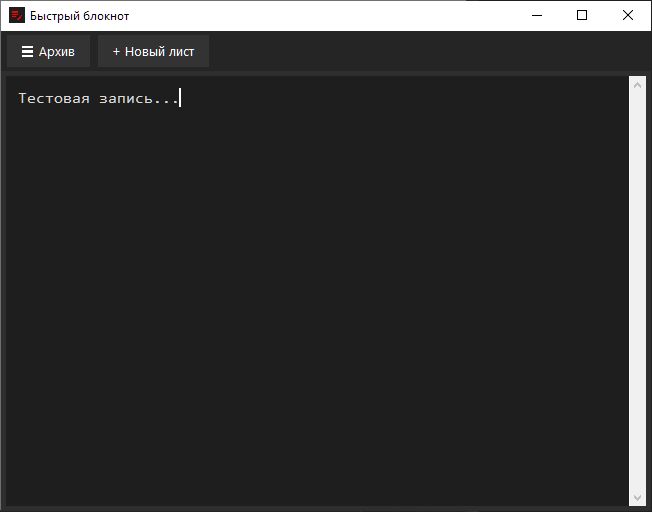
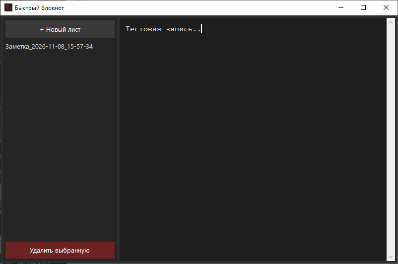
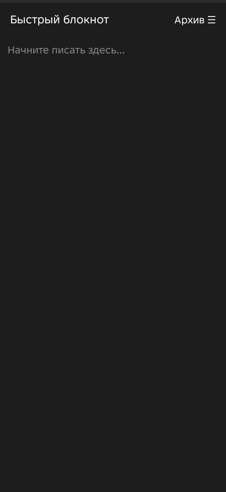

Легковесные утилиты для мгновенных заметок с темной темой, автосохранением при закрытии и хронологической сортировкой файлов в формате .txt.
Открывается чистый лист. Список всех сохраненных заметок скрыт и выдвигается по кнопке «☰ Архив».

⬇ Скачать для Windows (.exe)Список всех заметок всегда открыт слева для быстрого переключения, редактирования и удаления файлов.

⬇ Скачать для Windows (.exe)Легкое приложение без рекламы. Поддерживает выбор папки сохранения во внутренней памяти или на SD-карте.

⬇ Скачать для Android (.apk)